Help
Getting your music in, playing it, and setting the tape up the way you like it.
What the buttons are
The app's header, its keys and an album's row, each numbered. Find the button you're puzzled by, then read its number underneath.
The header
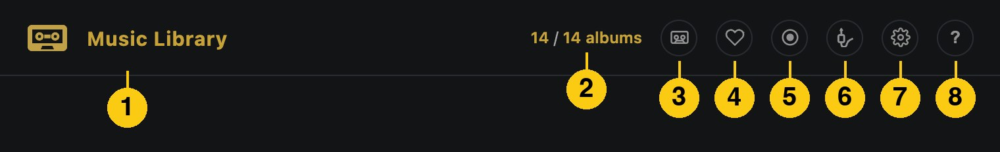
- The cassette mark and the title. What the list is made of: Music Library, Audiobooks or Apple Music.
- The count. How many albums (or tracks, or books) are showing, out of how many there are. A search or a filter brings the first number down.
- The source button. It is only there once you have a second source: an Audiobookshelf server or Apple Music. It opens a menu of what the list plays from, and stays lit while you are away from your own music.
- The heart. Favourites only. Press it again to see everything. In the app, hold it for a second to download your favourites.
- The circle. Downloaded only: what is on this device. In the app it also counts the tracks still to come while downloads run.
- The speakers. The system's list of AirPlay speakers. It stays lit while a speaker is chosen, and names it.
- The settings. Tape settings. A right-click on it lists the tabs by name (on the Mac, the settings open in a window of their own).
- The help. This help, as a panel in the app.
The heart and the circle are switches: they stay lit while they are on, and a second press turns them off. The speakers and the source button stay lit while something other than the Mac or your own music is chosen. Every header button has a right-click menu that says what it does.
The keys
There are two sets, Tape and Modern. Choose in tape settings › Tape › Controls, or right-click the keys. This is the Tape set, with the meters on.
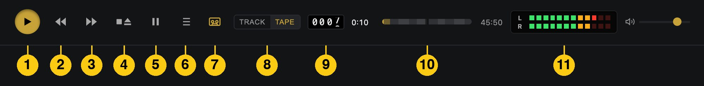
- Play. It latches down while the tape runs, and its arrow shows the way the tape is going. Pressed while the tape runs, it turns the tape over.
- Rewind. Races the tape back until you press Stop or Play.
- Fast forward. The same, the other way.
- Stop and eject. ■▲ stops the tape where it is. Pressed again, it ejects.
- Pause. Holds a playing tape where it is. Press it again, or Play, to carry on.
- This Tape. The list of the album that is playing, whole (Q).
- The cassette. Shows or hides the cassette above the list (C).
- Track or Tape. What the bar shows: the track playing, or the whole tape (T).
- The counter. Turns of the take-up hub, as a deck's counter reads.
- The bar. How far in you are. Click it to wind to a spot.
- The meters. Left and right, green, then amber, then red as the tape gets louder. They are there only when Look › VU meters is on.
The Modern set swaps these for a player's keys.
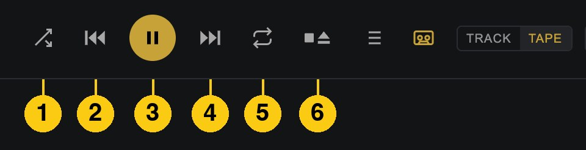
- Shuffle. Plays the queue in a random order.
- Skip back. A tap goes to the previous track; hold it to rewind.
- Play and Pause. One key. It shows Pause while the music plays.
- Skip forward. A tap goes to the next track; hold it to wind on.
- Repeat. Plays the current track again when it ends.
- Stop and eject. ■▲, as in the Tape set.
An album's row
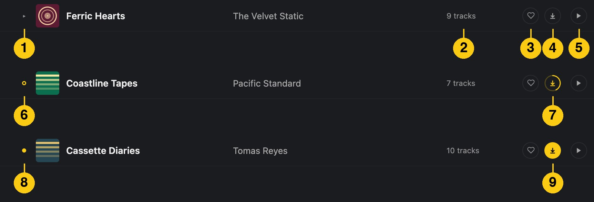
- The arrow. Opens the album to show its tracks.
- The count. How many tracks the album has.
- The heart. Marks the whole album as a favourite.
- The download arrow. Fetches the album to this device without playing it.
- Play. Plays the album in order. Double-clicking the row does the same.
- A ring where the arrow was: part of the album is on this device.
- A ring round the download arrow while it downloads. It fills as the tracks arrive.
- A yellow dot where the arrow was: the whole album is on this device.
- The arrow, filled yellow: downloaded. Point at it and a × shows; pressing it removes the downloaded copy. Music you copied in yourself is never removed.
A track has its own heart and download arrow, for that one track.
Getting started
Tape Deck plays music you already have. There are a few ways to bring it in, and you can use them together.
- Copy albums into the app
- On an iPhone or iPad, open the Files app and copy album folders into On My iPhone › Tape Deck (or On My iPad), laid out as Artist › Album › tracks. On the Mac, choose File › Show Albums Folder and copy them in there. The app picks them up when you come back to it.
- Through iCloud Drive
- Copy album folders into iCloud Drive › Tape Deck › Music, laid out as Artist › Album › tracks, and they're in the app on every iPhone, iPad and Mac signed in to the same iCloud. An album fills in, track by track, as iCloud brings it to each device, and shows up while the app is open. An album folder dropped straight into Music, with no artist's folder around it, is named by its tags. Open the app once on a device for the Tape Deck folder to appear there.
- Play from your own music server
- If you run a music server, type its address in tape settings › Library › Music server, or in its tile on the app's opening screen. It can be a Tape Deck Server, Plex (sign in with your Plex account) or a Subsonic server such as Navidrome, or Jellyfin through its Subsonic plugin. The whole library on it is listed; a track downloads when you play it, and the rest of its album after it. If the server asks for a password, a Password field shows. Start again, under the server in tape settings › Library, forgets the server and its sign-in and shows the opening screen again, with Open the player to come back.
- No server? Run Tape Deck Server
- Tape Deck Server is a free, open-source music server for the app: one Python file, or one Docker container, on any computer, NAS or Raspberry Pi. Point it at a folder of albums laid out as Artist › Album › tracks, put it behind HTTPS (Caddy or Tailscale Serve will do), and type that address into the app. A password keeps it yours, and a second one lets friends play without touching your favourites.
- A music folder, or a NAS
- Tape Deck can play a folder where it is, without copying it in, laid out one folder per artist with one per album inside: tape settings › Library › Music folder › Choose, or on the Mac File › Choose Music Folder… (⌘O). On an iPhone or iPad that can be a folder on a NAS: in the Files app, or in the picker itself, tap ⋯ › Connect to Server, type the NAS's address (such as smb://192.168.1.20), and choose its music folder. Its albums take the place of the music server's copies; when the NAS or the drive can't be reached, its albums are left out until it can.
- Formats
- MP3, AAC (M4A), FLAC and WAV. Ogg and Opus files are left out, and the app says how many.
Playing
- An album or an artist
- Click the ▶ on its row, or double-click the row, to play it in order. Click a row to open it and see its tracks.
- Two sets of keys
- Choose in tape settings › Tape › Controls, or right-click the keys. Tape is a portable recorder's: Play, Rewind, Fast forward, ■▲ and Pause. Modern is a player's: shuffle, skip back, one key to play and pause, skip forward, repeat, and ■▲.
- Play and Stop
- Play latches down while the tape runs, and its arrow points the way the tape is going: ▶ for side A, ◀ for side B. Press it while the tape is running to turn the tape over at the same point. ■▲ stops the tape where it is; pressed again, it ejects.
- Pause
- Holds a playing tape where it is, with Play still down. Pause again, Play or Space carries on.
- Rewind and fast forward
- The tape races along the side until you press ■▲ (it stays there) or Play (it plays from there). With the modern keys, tap a skip key for the next or previous track, or hold it to wind.
- Wind to a spot
- Click the bar in the player, or the track index on the cassette's label, and the reels race there. Click twice on a track to play it from the top. Drag the cassette sideways to wind it by hand.
- A tape keeps its place
- Put an album back in with its ▶ and it plays on from where it was when it came out: the same track and second. ▶ on the album already in the deck starts it from the top, as does a tape that was played to its end. Pick a track to start there instead.
- This Tape
- The list button in the player, or Q, shows the album that's playing, whole. Click a track to play it.
- Mixtapes
- On Recent, + Mixtape › New mixtape opens one: name it, press + on the albums and tracks you want, in the order you want them, and Done. It plays as a tape of its own, sides and all. A tape of what I've played makes one of the last hour's tracks. Mixtapes are kept on the device they're made on.
- A snapped tape
- If a track can't be had when the tape reaches it (a lost connection, say), the tape pulls taut and snaps. Press Play to splice it and try again, or pick another track.
- A chewed tape
- At the Chewed end of the tape condition, the deck now and then eats the tape and a loop falls out over the page. Press Play, or tap the tape, to wind it back in, and the music carries on where it stopped. On Apple Watch, turn the Digital Crown to wind it in with the pencil. Turn the condition down if you'd rather it didn't.
- With the screen off
- Music keeps playing with the screen locked or the app in the background, and the lock screen, Control Centre and headphone controls work. A call or an alarm stops the tape, and it carries on afterwards; so does the car's announcement. Taking the headphones out, or leaving the car, stops it.
- AirPlay speakers
- The speakers button in the header (a jack plug) lists your AirPlay speakers. Choose one and the tape plays there, and the cassette is drawn a little late to keep time with what you hear.
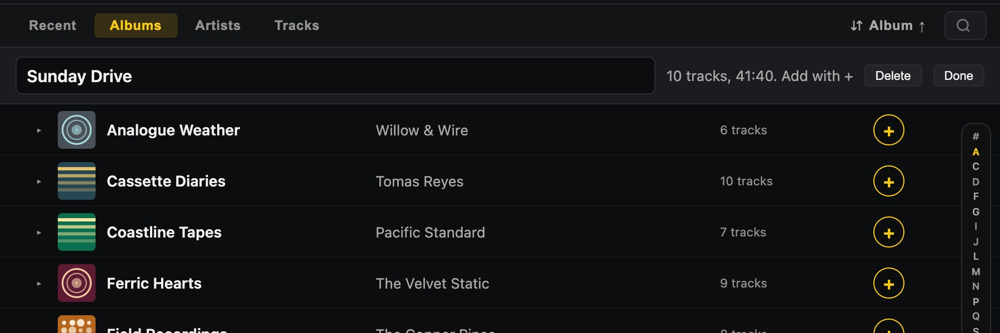
The cassette
- Show it
- The cassette button, or C. The expand button, or Shift+F, makes it full screen. On an iPhone, turn the phone sideways. The button beside it steps through the shells; hold it to take the cassette apart.
- What a side holds
- One track, the whole album or the whole queue (tape settings › Tape › Tape holds). Two halves splits it over sides A and B; a C46 to a C120 cuts the sides to that length; Fit to content keeps it all on one side.
- Auto-reverse
- At the end of side A the deck plays side B backwards without taking the tape out. Off, the tape is turned over between sides. D turns it over at any time.
- Track or Tape view
- The switch in the player, or T. Track shows the track playing; Tape shows the whole tape, side after side, with the leader and any blank tape at the end.
- VU meters
- Tape settings › Look › VU meters, or a right-click on the cassette. Two rows of twelve lights in the transport, beside the bar, one for each channel, green, then amber, then red as the tape gets louder. They show the tape's level, not the volume's. Apple Music's sound never reaches the deck, so they're off there.
- Tape settings
- The gear in the header or on the cassette, or G. Tape: what a side holds, side length, auto-reverse, the keys and the leader. Sound: the tape's condition, its type and Dolby, the cue tone and motor wow. Look: the shell, the label, the handwriting, the VU meters and the tint from the cover. Library: the music server, the audiobook server, the downloads, and Reset, which puts the settings back to their defaults and keeps your favourites and your place.
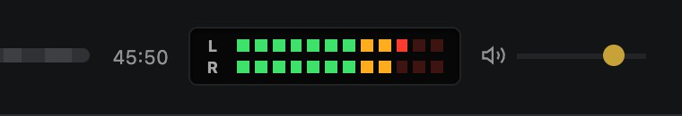
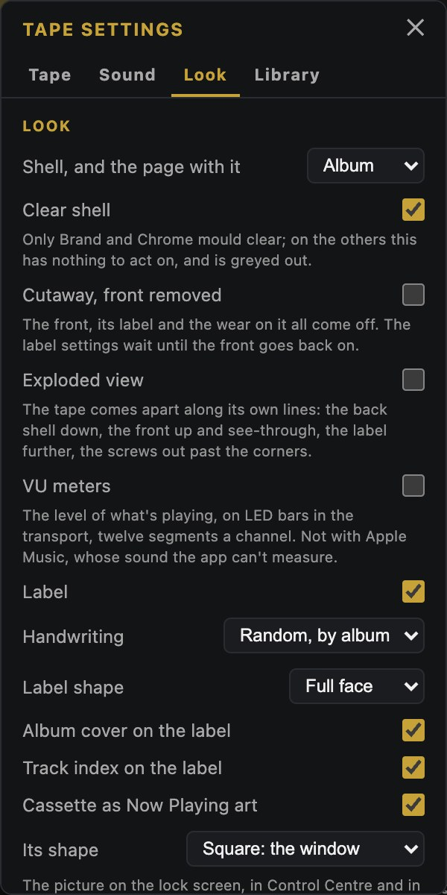
Your library
- Views
- Recent, Albums, Artists and Tracks, from the tabs above the list. Recent is the ten albums you listened to last, then the ten newest in your library.
- Sort
- The button beside the search names the order the list is in. Click it for the view's columns; choose the one already in use to turn the order round. Recent has its own order and no button.
- Search
- Searches title, artist and album as you type; every word has to match somewhere, and accents don't need typing. Esc, or the cross in the box, clears it.
- Favourites
- The heart on a track marks it; the heart on an album's row marks the whole album. The heart in the header, Favourites only, shows nothing but favourites. They follow you between your iPhone, iPad and Mac through iCloud.
- What's on this device
- A yellow dot means an album or track is on this device; a ring means part of the album is. The Downloaded only button in the header, a ring with a dot, shows only what's on this device. When the server can't be reached, everything else is dimmed and skipped.
- Downloads
- The download button beside an album's ▶ fetches it without playing it, and × removes the downloaded copy (music you copied in yourself is never removed). A track has its own download button beside its heart, for that one track. Tape settings › Library › Downloads sets how much space to keep, 20 GB unless you change it; past that, the albums played longest ago are removed first. Download there, or a long press on the header's heart, fetches every favourite.
Apple Music
- Going in
- Apple Music, from the source button in the header, swaps your music for your Apple Music library, and Music Library swaps it back. The first time, the app asks to use Apple Music. Playing needs an Apple Music subscription.
- What's listed
- Recent (what Apple Music played last), Albums, Artists, Songs and Playlists, each playlist as an album of its songs. The search looks through your library at once and, after a pause, through the Apple Music catalogue, whose albums and songs come under a heading of their own.
- The sound
- An album, a playlist or a song is a tape, and the reels, the counter and the keys run as ever. The sound is Apple Music's own, so the tape's hiss, wow, wear and cue tone are off while you're there and come back when you leave; the keys, the winding and the eject still sound. Nothing is downloaded.
- Hearts
- A heart on an Apple Music album is an ordinary favourite: the same album in your own music shares it.
Audiobooks and podcasts
- Connecting
- Put your Audiobookshelf server's address and an API key in tape settings › Library, and Audiobooks appears in the menu of the source button in the header: it swaps the music for your books and podcasts, and Music Library swaps them back.
- Playing a book
- A book is a tape and its chapters are the tracks. It downloads whole before it plays, and Play takes it up where you left off, in this app or Audiobookshelf's own. Entering the books puts the one you played last in the deck, ready for Play.
- Speed and skips
- The menu left of Play reads 0.8× to 1.2× at the same pitch. The lock screen, the headphones and the car skip back 15 seconds and on 30.
- Keeping your place
- So a stray tap can't lose your place, a book's tape moves only by Rewind and Fast forward, the bar in Track view, and a chapter's row.
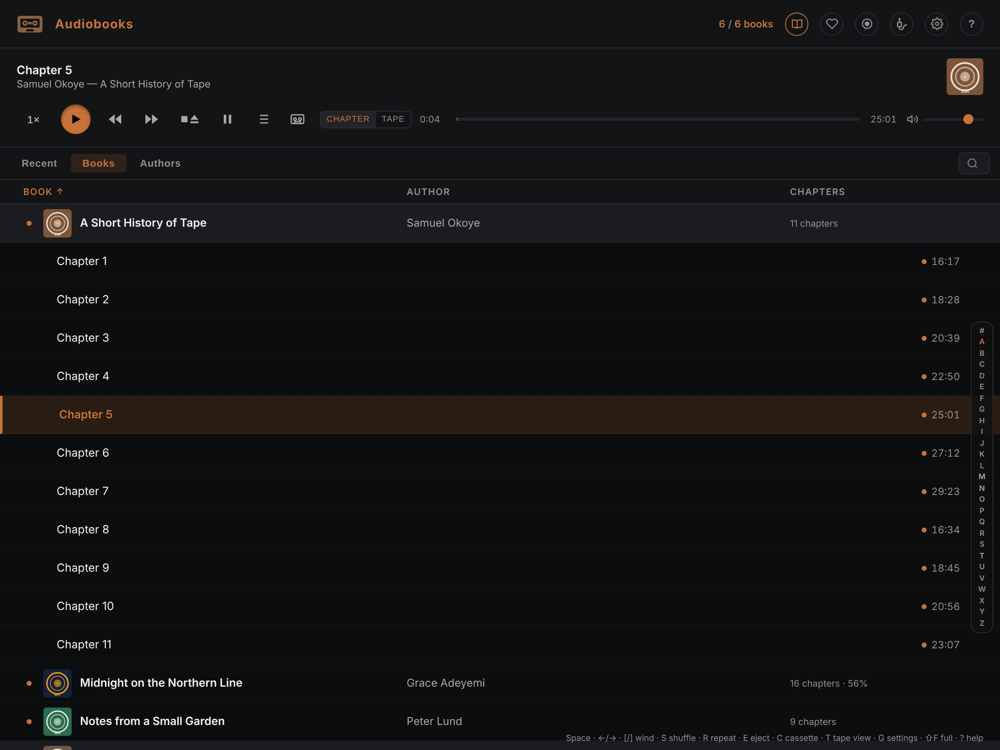
Apple Watch
- Getting it
- The watch app comes with the iPhone app. If it isn't on your watch, open the Watch app on your iPhone and install Tape Deck from the list there. The iPhone plays the music; the watch shows the tape and works the keys.
- The deck
- The cassette in your iPhone's deck, in the same shell, with the album's label in the same hand. The reels turn and the counter rolls as the tape plays. Under the cassette are the side and the track, then the keys: back, Play, on and Stop. Play stays down while the tape runs. Tap the cassette to turn it over.
- The Digital Crown
- Turn it to set your iPhone's volume; a bar beside the crown shows the level as it changes. With the tape chewed, it turns the pencil instead.
- A chewed tape
- The loop hangs out of the cassette with a pencil in the hub. Turn the crown to wind it back in; once it's all in, the music carries on.
- Recent and Books
- Swipe left for the albums you played last, as cassette cases on a shelf, and again for the books you're reading. Tap one to play it.
- The complication
- Touch and hold your watch face, tap Edit, and choose Tape Deck for one of its complications. It shows a cassette, and what's playing where there's room. Tap it to open the app.
Widget and stickers
- The Home Screen widget
- On an iPhone or iPad, touch and hold the Home Screen, tap Edit, then Add Widget, and choose Tape Deck. It shows the cassette in the deck, small, medium or large, and its hubs turn while the tape plays. Its keys, Previous, Play or Stop, and Next, work without opening the app. It goes on the Lock Screen and, on an iPhone, in StandBy too. Tap it to open the app.
- On the Mac
- Right-click the desktop, choose Edit Widgets, and add Tape Deck. It's the same cassette in its three sizes, with the same keys, on the desktop and in Notification Centre. With another window in front the desktop draws it in lines.
- iMessage stickers
- In a conversation in Messages, tap + and choose Tape Deck (under More if it isn't listed). There are eight cassettes, their hubs turning, each labelled in a hand with something to send: Mixtape, Road Trip, Love Songs, Thank You, Miss You, Happy Birthday, Good Night and Mind Blown. Tap one to send it, or touch and hold it to stick it on a message.
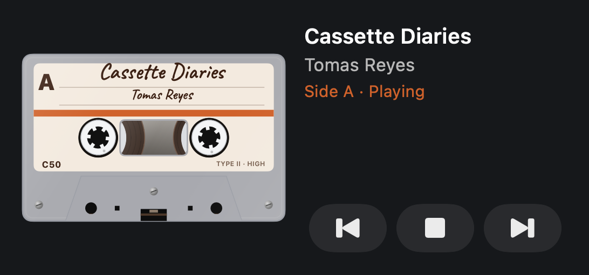
In the car, and Siri
- CarPlay
- Connect your iPhone and choose Tape Deck on the car's screen: Recent, Albums, Artists and, with an Audiobookshelf server, Books. While the car is moving a long list comes in runs, A–C, D–F, and within a letter by name, so all of it can be reached. Recent is the five albums you listened to last and the five newest.
- Now Playing
- The car's Now Playing shows the cassette, with a key to turn it over. Its picture, also on your lock screen, is set in tape settings › Look › Its shape: the cassette's window, the whole tape on the album's colours, or the whole tape wide.
- Siri and Shortcuts
- "Carry on the tape in Tape Deck" (or "Play Tape Deck") plays the tape in the deck from where it stopped, a book too. "Play what's new in Tape Deck" plays the album that came into your library last. "Stop Tape Deck" stops it. All three are in the Shortcuts app as well.
On the Mac
- Menus
- Controls: Play and Stop (Space in the window), Turn Tape Over ⌘D, Next and Previous ⌘→ ⌘←, Eject ⌘E, AirPlay…. View: the tabs ⌘1 to ⌘4, Show Cassette ⌘K, Full-Screen Cassette ⇧⌘F, Mini Player ⌥⌘M, This Tape ⌥⌘U, Downloaded Only ⌘L, Search Library ⌘F. Tape and Look hold the tape settings as menus.
- Mini player
- A small window that stays above the others and shows just the cassette. Move the mouse over it for the controls.
- Right-click
- On the keys, the cassette, an album's row or the header's heart, a right-click opens a menu of what can be done there. The rest of the header's buttons have one too: the source button's menu, the speakers, the settings, the help and Downloaded only. Each ends with About Tape Deck, which shows the version.
- Settings
- Tape Deck › Settings… (⌘,) opens tape settings in a window of their own.
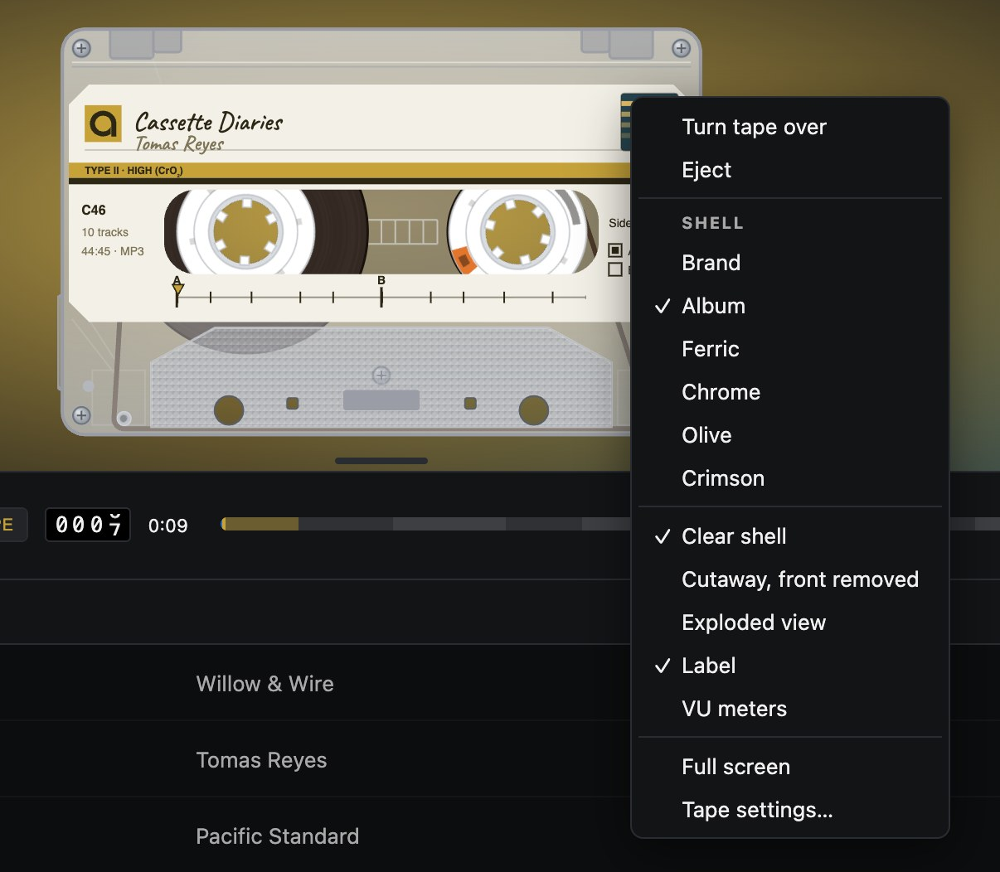
Keyboard
| Space | Play / stop |
| D | Turn the tape over, at the same point |
| ← → | Back / forward 10 seconds |
| [ ] | Rewind / fast forward |
| N P | Next / previous track |
| S R | Shuffle / repeat |
| E | Eject |
| Q | This Tape |
| C | Show or hide the cassette |
| Shift+F | Cassette full screen, and back |
| T | Track or Tape view |
| G | Tape settings |
| / or F | Search |
| Esc | Clear the search, close settings or help, leave full screen |
| ? | The help in the app |
Questions
What people have asked while testing Tape Deck.
Getting started
The app opens on "Where your music comes from"
That's the opening screen: it shows when there's nothing to play yet, and whenever you ask for it in tape settings › Library › Where the music comes from. Each source has a tile saying what it needs and how it stands: your own music (copied into iCloud Drive › Tape Deck › Music, into the app's own folder through the Files app, or File › Show Albums Folder on the Mac, or a folder played where it is), a Tape Deck Server, Plex, Jellyfin or another Subsonic server, Audiobookshelf and Apple Music. Tap one to set it up there. A folder you make yourself, with the app's folder's name, isn't read: use the app's own, which Open in Files takes you to. Meanwhile the demo tape plays; once music of your own comes it stays behind it, out of the lists, and a search for Andy Bateman or Glenn Callow finds it. With no server of your own, Tape Deck Server serves a folder of music to the app.
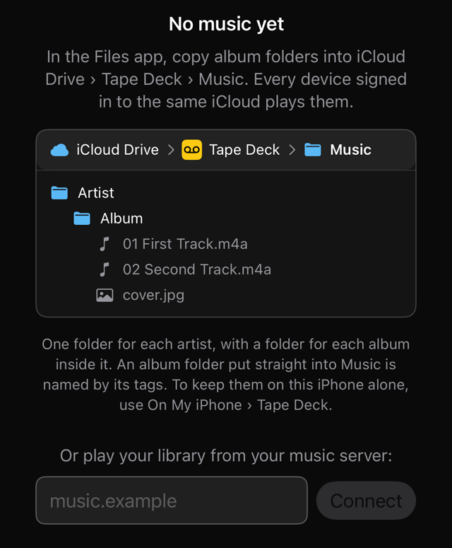
Which iPhone or iOS does it need?
iOS 18 or later for the iPhone and iPad, macOS 15 for the Mac and watchOS 11 for the Apple Watch. On something older the app won’t install, so update the system first.
The invitation email’s sign-in loops
Open the invitation on the iPhone itself, install TestFlight from the App Store, and choose View in TestFlight (or Start Testing) in the email. If the sign-in still loops, open the same link on a Mac, or in a private browser window. An invitation runs out after a few days, so ask for a new one if yours has.
TestFlight emailed me a build number that doesn’t match
The iPhone and the Mac apps are built separately, and each has its own build number. Check which app the email names: a Mac build is not an update for the iPhone.
It went black after a while in the background
iOS can end the app’s page to free memory while it is in the background, and older builds were left with nothing to show. Version 4.29.2 loads the page again when you come back, so update from TestFlight.
The watch shows an empty deck
The watch draws what’s in your iPhone’s deck, so open Tape Deck on the iPhone. With both in reach of each other, the tape appears on the watch within a few seconds.
How do I make it sound clean?
In tape settings › Sound, set the condition to Fresh and turn off the cue tone and motor wow; in Tape, turn off the lead in and lead out.
Does it collect anything about me?
No. There’s no account and no tracking, and the only permission the app asks for is to use Apple Music, the first time you choose it from the source button. Your music stays on your devices and your own servers, and your favourites go through your own iCloud. The privacy policy says what the app keeps, and where.
Servers and sources
Can I use Spotify?
No. Spotify isn’t a source Tape Deck can play. It plays Apple Music (with a subscription) and music you have as files: copied into the app, in a folder, or on your own music server.
Does Tape Deck stream from a music service? Do I need an Apple Music subscription?
Apple Music, with a subscription: Apple Music, from the source button in the header, plays your Apple Music library and the catalogue as tapes, and playing needs the subscription even for songs already in your library. Without one, Tape Deck plays music you have as files. More on Apple Music.
Should I have the book icon?
That is the source button, and it is only there once there is a second source: an Audiobookshelf server (tape settings › Library) or Apple Music. With only your own music, the header has no source button. It is number 3 in the picture of the header.
Can I point it at my Jellyfin, Plex or Navidrome?
Yes. Type the address in tape settings › Library › Music server. A Navidrome server works as it is, and Jellyfin works through its Subsonic plugin. For Plex, sign in with your Plex account. The music server Tape Deck was made for is Tape Deck Server.
My server asks for a password
The first screen shows a Password field when the server asks. A Tape Deck Server’s sign-in is kept for 30 days and asked for again when it runs out (from version 4.20.1); a Subsonic server takes a username and password. If you have forgotten it, Start again, in tape settings › Library, forgets the server and its sign-in and shows the opening screen.
The first screen says Connecting… and never stops
That was a server asking for its password while the password field was empty: Connect asked again, and was asked again. From version 4.35.1, with the password wanted and the field empty, Connect says so. Type the password, or choose Start again if you meant a different server.
It says “That server didn’t answer”
Either the address can’t be reached from where you are, or the server wants a password and the app was never given one. Open the address in Safari to see which; if it asks for a password, the first screen has the field for it (version 4.20.1 and later).
Can I play my music from a NAS?
Yes, two ways. On the iPhone or iPad, connect the NAS in the Files app (⋯ › Connect to Server, such as smb://192.168.1.20), then choose its music folder in tape settings › Library › Music folder › Choose (version 4.30.0 and later). Or run a music server on it and type its address. The folder must hold one folder per artist, with one per album inside.
What you see
What do the icons in the header mean?
From the left: the cassette mark and the title, the count, the source button, the heart (favourites only), the circle (downloaded only), the speakers, the settings and the help. The numbered picture at the top of this help says what each does.
Why do some buttons stay lit?
The heart and the circle are switches, so they stay lit while they are on, and a second press turns them off. The source button is lit while you are away from your own music, and the speakers while a speaker is chosen. On a touch screen a button can also look lit after a tap until you touch something else: that is the screen’s own hover left standing, not a setting, and it is mended from the build after 4.35.3.
What do the heart and the download arrow on an album do?
The heart marks the whole album as a favourite, and the heart in the header then shows favourites only. The arrow downloads the album to this device without playing it; a ring or a yellow dot where the arrow was says how much of it is here. The picture of an album’s row has each state.
What are the yellow dots and rings?
A dot means the album or track is on this device, and a ring means part of it is. The circle in the header shows only what is on this device, and counts the tracks still to come while downloads run.
My favourites aren’t on my other device
They go through iCloud: check you’re signed in to iCloud with the same Apple Account on both. They usually arrive within a minute.
Something else? Email andy@andybateman.com.